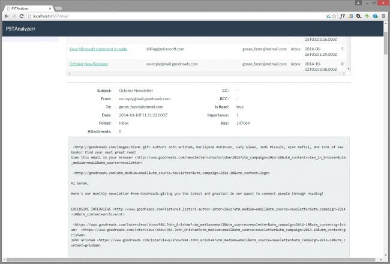

Analiza PST datoteka
Članovi tima:
- Martina Šestak
- Goran Vodomin
- Matej Vuković
- Viktor Lazar
|
Uvod
Cilj je ovog projekta napraviti aplikaciju u koju se učitava PST datoteka, iz nje se zatim dohvaćaju podaci o mail-ovima(from, to, cc, bcc, subject mail-a). Po podacima je moguće raditi pretragu punog teksta. UI dio sadrži popis svih mail-ova iz PST datoteke te njezinu vizualizaciju pomću odabranog alata.
Smisao zadatka je grafički prikazati podatke koji se dobivaju analizom PST datoteka.
PST datoteke
Definicija PST datoteka
PST datoteke su karakteristične za Microsoft Outlook. Svaka PST datoteka (eng. Personal Folders file) sadrži poruke (mail-ove) i ostale dokumente koje koristi Outlook. Također, sve email poruke, kalendar, zadaci i ostale stavke su pohranjene i na mail serveru kojima se pristupa korištenjem protokola poput POP3, IMAP, HTTP i sl.
{kind=link}
![[1]](http://www.safepstbackup.com/i/outlook-pst-file.jpg){kind=link}
PST datoteku je moguće premjestiti u eng.Outlook Data file(.pst). Pritom je bitno napomenuti da se ovim postupkom ne utječe na ograničenje veličine mailbox-a na mail serveru jer je ta datoteka pohranjena lokalno. Na ovaj se način može osloboditi određen dio memorije na mail serveru. Osim toga, kao dodatnu mogućnost MS Outlook nudi pohranu podataka u PST datoteku pod nazivom eng. offline Outlook data file s ekstenzijom .ost. U tom slučaju nije potrebna internetska veza za rad s tom datotekom, nego je moguće raditi offline pa se promjene ažuriraju s mail serverom nakon uspostave internetske veze.
--Martina Šestak 17:13, 18. siječnja 2015. (CET)
Karakteristike PST datoteka
{kind=link}
![[2]](http://www.winpst.com/help_documents/converter/images/folder_list.gif){kind=link}
Struktura
Na slici 2. prikazana je struktura uobičajene PST datoteke koju čine sljedeće mape (eng. folders):
- Inbox
- Drafts
- Sent Items
- Deleted Items
- Calendar
- Contacts
- Junk E-mail
...
Osim navedenih mapa i stavki, PST datoteka sadrži i postavke konfiguracije poput pogleda (eng.Views), custom formi te pravila i upozorenja.
Lokacija PST datoteka
Prema uobičajenim postavkama, PST datoteke su na Windows operacijskom sustavu smještene na sljedećim lokacijama:
- Za Outlook 2007 i ranije verzije na Windows XP:
C:\Documents and Settings\%username%\Local Settings\Application Data\Microsoft\Outlook\ - Za Outlook 2007 i ranije verzije na Windows Vista, Windows 7 ili Windows8:
C:\Users\%username%\AppData\Local\Microsoft\Outlook\ - Za Outlook 2010 na Windows XP:
C:\Documents and Settings\%username%\My Documents\Outlook Files - Za Outlook 2010 i Outlook 2013 na Windows Vista, Windows 7 ili Windows 8:
C:\Users\%username%\Documents\Outlook Files
--Martina Šestak 17:13, 18. siječnja 2015. (CET)
Prednosti i nedostaci PST datoteka
Neke od prednosti korištenja PST datoteka su:
- Smanjivanje količine podataka na mail serverima, a time i povećanje prostora u koji se mogu pohraniti mail-ovi
- Offline pristup podacima za krajnjeg korisnika
- PST datoteke se kreiraju automatski i ne iziskuju puno "ručnog rada"
{kind=link}
Kao najčešći nedostaci PST datoteka spominju se sljedeća svojstva:
- Rijetko se rade sigurnosne kopije PST datoteka, što može dovesti do gubitka podataka
- PST datoteke mogu postati sredstvo u otkrivanju pouzdanih podataka poduzeća javnosti
- PST datoteke su sklone oštećivanju podataka (eng.data corruption), posebice u slučajevima kad im može pristupiti više korisnika
- Microsoft ne pruža podršku za pohranu PST datoteka online i njihovo dijeljenje zbog povećane mogućnosti oštećenja podataka
- PST datoteke su lokalne za svako računalo, pa je nemoguće pristupiti istom mailboxu s drugog računala
- PST datoteke rade jedino s MS Outlook-om
- PST datoteke povećavaju troškove poslovanja, ali i zadaju dodatan posao administratorima u poduzećima
--Martina Šestak 18:48, 18. siječnja 2015. (CET)
PSTAnalyzerr aplikacija
U sklopu ovog projekta razvijena je aplikacija za analizu PST datoteka. Aplikacija, sama po sebi je desktop aplikacija sa web sučeljem. Ona se može podijeliti na nekoliko dijelova.
Na početku nakon pokretanja aplikacije, potrebno je odabrati PST datoteku koju se želi analizirati. Nakon toga pritiskom na gumb "Launch" pokreće se Elasticsearch server i kreira se index nad kojim se provodi strukturiranje (mapiranje), zatim pokreće se i sama analiza. Točnije koristeći metode biblioteke Java Lib-Pst dohvaćaju se podaci o pojedinom emailu te kreira struktura foldera. Iz dohvaćenih podataka kreira se i strukturira JSON dokument koji se odmah potom pohranjuje u prethodno kreirani index.
Nakon što je uspješno spremljena cijela PST datoteka unutar ES, pokreće se lokalni web server (Jetty) te inicijalizira Spark. Skupa sa Sparkom inicijalizira se i Kibana sučelje. Korisnik potom otvara web preglednik na adresi http://localhost:4567 te mu se otvara početno sučelje aplikacije na kojem korisnik može pregledavati emailove, vidjeti strukturu foldera te pomoću Kibane analizirati PST datoteku.
U razvoju korištene su različite tehnologije, a neke, važnije od njih, opisane su u nastavku.
--GoranVodomin 20:32, 18. siječnja 2015. (CET)
Java Lib-Pst
Java Lib-Pst je open source projekt, dostupan ovdje, kojem je cilj omogućiti pristup podacima pohranjenim u PST datotekama. Na taj način podaci mogu biti dohvaćeni, a potom pohranjeni i u drugim sustavima namijenjenim za razmjenu elektroničke pošte.
Projekt je originalno baziran na temelju dokumentacije koja je rađena u sklopu projetka libpff. Nakon što je Microsoft objavio službene specifikacije PST datoteka, javila se potreba za novim bibliotekama pa je stoga pokrenut open source projekt Java Lib-Pst.
Glavni funkcionalni ciljevi projekta su:
- Učinkovitost – biblioteka mora omogućiti rad s velikim PST datotekama u razumnom vremenu
- Podrška za rad s kriptiranim PST datotekama (i s novim verzijama Outlook-a)
- Podrška za ANSI (32 bit), Unicode(64) Outlook PST datoteke i za razmjenu OST datoteka
Funkcionalnosti koje biblioteke ne osigurava:
- Rad s oštećenim PST datotekama
- Povratak izbrisanih email-ova
- Kreiranje i dodavanje novih email-ova u PST datoteku
PST datoteka pohranjuje email-ove u foldere koji imaju svoju strukturu. Jedan od načina na koji možemo dohvatiti podatke iz PST datoteke, pomoću biblioteke Java Lib-Pst, je da pratimo strukturu foldera i iz svakog foldera dohvatimo podatke o pojedinom email-u koji se nalazi u folderu. Podatke o emailu dohvaćamo pomoću metoda koje su dio Java Lib-Pst biblioteke te kasnije njima manipuliramo ovisno prema potrebi. Svaka metoda i klasa koja je dio biblioteke je dokumentirana, a dokumentacija se nalazi na sljedećoj poveznici.
Java Lib-Pst biblioteku u našem projektu koristili smo da pomoću nje dohvatimo podatke PST datoteka, gdje je za svaki email generiran JSON dokument koji je potom spreman u bazu podataka ElasticSearch-a.
--GoranVodomin 19:03, 18. siječnja 2015. (CET)
Elasticsearch
Elasticsearch je fleksibilna, open-source, tehnologija za pohranjihvanje i analizu podataka. Baziran je na Apache Lucene sustavu za “full text” pretraživanje i indeksiranje. Podaci unutar Elasticsearcha(ES) se spremaju u obliku JSON dokumenata. ES možemo zamisliti i kao bazu podataka i skup tehnologija za pretraživanje iste. Ukoliko ES usporedimo s relacijskom bazom podataka, tada u tom slučaju možemo povući paralelu između njih. Unutar relacijske baze podataka podatke spremamo u bazu podataka. Baza podatka organizirana je u tablice koje se sastoje od redova i kolona. Za razliku od toga u Elasticsearcu podaci se umjesto u bazu podataka spremaju u indexe (“baza podataka”), koji imaju tipove (“tablice”), u koje spremamo dokumente, koji imaju svoja polja (eng. Field, “kolona”).
Za ES se može reći da je “schema-free” ali ne i “schema-less” to znači da podaci koji se spremaju ne trebaju prije zapisivana biti strukturirani, ali ukoliko je to potrebno mogu se strukturirati.
Strukturiranje podataka se unutar ES naziva mapiranje (eng. Mapping), što bi se jezikom relacijske baze podataka moglo nazvati kreiranje relacijske sheme. Ukoliko unaprijed ne provedemo mapiranje podaci se mapiraju automatski. Pritom valja napomenuti da se može izvršiti naknadno mapiranje, ali treba biti oprezan jer u slučaju nekompatibilnosti tipova podataka moguća je promjena ili čak gubitak svih podataka. Mapiranje je veoma korisno jer se prilikom toga definira kako će biti pohranjeni podaci u kao JSON dokumenti te koja su polja prezraživa, koji su njezini tipovi podataka itd..
Jedan od važnijih djelova ES je upitni jezik (query DSL). Upiti su realizirani kao JSON objekti koji imaju preddefinirana polja. Rezultati upita su isto tako JSON objekti koji sadrže zaglavlje s meta podacima te polje JSON objekata koji su rezultati upita. Preddefiniranih polja ima mnogo, a svi oni mogu se naći unutar službene dokumentacije. Upiti se mogu izvršavati na nekoliko načina, prvi od njih je korištenjem CURL-a, a drugi je pomoću sučelja za upite (Sense) ili korištenjem Elasticsearch API-a unutar različitih programskih jezika.
Primjer upita i odgovora:
Upit:
GET /pstindex/email/_search
{
"sort": [
{
"getMessageSize": {
"order": "desc"
}
}
],
"query": {
"match_all": {}
}
}
Odgovor:
{
"took": 288,
"timed_out": false,
"_shards": {
"total": 1,
"successful": 1,
"failed": 0
},
"hits": {
"total": 1219,
"max_score": null,
"hits": [
{
"_index": "pstindex",
"_type": "email",
"_id": "1205",
"_score": null,
"_source": {
"subject": "prezentacija",
"importance": 1,
"getDisplayTo": "visnja.fara@foi.hr",
"isRead": true,
"getMessageCcMe": false,
"getOriginalSensitivity": 0,
"getReplyRecipientNames": "",
"numberOfRecipients": 1,
...
U sklopu projekta Elasticsearch se koristio za spremanje podataka o pojedinom emailu koji su pri pokretanju aplikacije analizirani i spremljeni u JSON dokumente. Za realizaciju korištene su ES java biblitoeke odstupne putem Maven repozitorija.
ES je distribuiran sustav. Prilikom pokretanja kreira se čvor (eng. Node) unutar kojega se mogu nalaziti različiti indeksi. Za potrebe ovog projekta, nakon kreiranja čvora, posebno je kreiran index nad kojim je kasnije provedeno mapiranje. Kada se na istoj mreži kreira još jedan čvor, dva (ili više) čvorova počinju komunicirati i kreira se klaster.
--Mvukovic2 20:04, 18. siječnja 2015. (CET)
Spark
Spark je Java razvojni okvir za izradu web aplikacija. Napravljen je po uzoru na Sinatru, web razvojni okvir za Ruby. Najvažnije odlike Spark razvojnog okvira,
koje su i presudile u odabiru, su jednostavnost, mala veličina i mogućnost brzog razvoja aplikacija. Verzija 2.1 koja je korištena u ovom projektu koristi i neke novosti
iz Java verzije 8, kao što su lambda funkcije. Vrijedi još napomenuti da u sebi ima ugrađen Jetty server, koji nije potrebno dodatno konfigurirati.
Spark je korišten za izradu korisničkog dijela aplikacije, kojim se vrši interakcija korisnika i aplikacije PSTAnalyzerr. Uz Spark, za izradu klijentskog dijela aplikacije korišteni su Mustache Java predlošci, te Bootstrap razvojni okvir. Nakon što su obavljene sve ranije navedene radnje, korisničko sučelje dostupno je lokalno na portu 4567 (http://localhost:4567). Početni zaslon sadrži 4 opcije, kako je prikazano na sljedećoj slici.
Mogućnosti su sljedeće:
{kind=link}
- Pregled sadržaja .pst datoteke (čitanje email poruka)
- Otvaranje Kibane i vizualizacija podataka
- Pregled pomoći
- Pregled izvornog koda i popratnih sadržaja - poveznica na GitHub repozitorij projekta
Ovdje je objašnjen dio vezan uz pregled email poruka, dok je Kibana opisana u nastavku.
Prilikom pregleda email poruka, može se odabrati nekoliko različitih prikaza. Standardan je prikaz gdje su prikazane sve email poruke koje se nalaze unutar učitane .pst datoteke. Osim toga, može se odabrati prikaz po direktorijima u kojima se poruke nalaze unutar .pst datoteke - Inbox, Sent, Trash. U navedenim prikazima nalaze se osnovni podaci o svakoj poruci - Subject, From, To, Date, Number of attachments.
Prilikom odabira neke od poruka, u donjem dijelu ekrana prikazuju se detaljniji podaci o poruci, te sam sadržaj (Body) email poruke.

Spark - minimalna konfiguracija
Da bi se Spark mogao koristiti u Java projektu potrebno ga je dodati kao Maven zavisnost. Nakon toga potrebno je uključiti Spark
{kind=link}
{kind=link}
import static spark.Spark.*;
Čim se definira prva ruta
get("/test", (request, response) -> "Ovo je test");
i pokrene aplikacija, automatski se pokreće i Jetty server kojem se može pristupiti na portu 4567 (http://localhost:4567/test). Prilikom kreiranja ruta, kako se vidi i iz gornjeg primjera, koriste se lambda funkcije.
Sam korisnički dio aplikacije u Sparku izrađen je prema MVC predlošku uz korištenje Mustache Java biblioteke za izradu predložaka. Kako bi se povezali logički i prezentacijski dio aplikacije, te generirali pogledi korištena je MustacheTemplateEngine klasa. Ova klasa, kao i implementacije ostalih sustava predložaka prilagođenih za Spark razvojni okvir može se pregledati i preuzeti na službenom GitHub repozitoriju ili dodati u projekt kao Maven zavisnost.
Ovdje je najvažnije bilo kako proslijediti rezultate upita koji se dobiju od Elasticsearcha u Mustache predložak. Rješenje je da se Json odgovor koji vraća Elasticsearch parsira u Map<String, Object> strukturu kroz koju se može iterirati unutar Mustache predložaka. Upiti nad Elasticsearchom izvršeni su pomoću Jest klijenta koji omogućuje korištenje HTTP Rest sučelja koje pruža Elasticsearch direktno iz Java kôda. Tako se upiti mogu pisati u ranije navedenom Elasticsearch upitnom jeziku.
Kôd ovog dijela može se pogledati na GitHub repozitoriju u sljedećem direktoriju.
--Viktor Lazar 00:59, 19. siječnja 2015. (CET)
Kibana
Kibana je open source nadzorna ploča (eng.dashboard) za analizu i vizualizaciju podataka dobivenih iz Elasticsearch-a. Njezine glavne prednosti su jednostavnost instaliranja i kasnijeg korištenja te fleksibilnost, budući da za njezino pokretanje nisu potrebni nikakvi serverski dodaci, nego običan web poslužitelj. Pristupa joj se putem web sučelja. Svaki korisnik može za odabranu PST datoteku kreirati custom dashboard u kojem podaci mogu biti prikazani u različitim oblicima (table, map, bar, pie, column, histogram...).
Za izradu aplikacije korištena je Kibana verzija 3.1.2 dostupna na adresi http://localhost:4567/kibana-3.1.2/. Međutim, da bismo je mogli pokrenuti uz Elasticsearch 1.4, potrebno je dodati postavke u dokumentu elasticsearch.yml:
http.cors.allow-origin: "http://localhost:4567" http.cors.enabled: true
Rezultati Elasticsearch-a prikazani su u dashboard-u PSTAnylzerrViz, u kojem su cjelokupna PST datoteka i svi njezini atributi na početku prikazani u obliku tablice:
{kind=link}
Također, Kibana omogućuje korisniku izvršavanje upita i filtriranje rezultata na temelju različitih atributa dobivenih iz PST datoteke (primjerice, prikaz rezultata za određeno vremensko razdoblje).
{kind=link}
--Martina Šestak 21:18, 18. siječnja 2015. (CET)
Literatura
- Office Online: Introduction to Outlook Data Files (.pst and .ost) [3]
- How-to-Outlook: About the Outlook PST-File[4]
- IBM developerWorks: Java development 2.0: Scalable searching with ElasticSearch[5]
- Java lib-pst[6]
- Elasticsearch Cookbook[7]
- Kluge K.: Elasticsearch, Logstash & Kibana[8]
- Elasticsearch Reference[9]